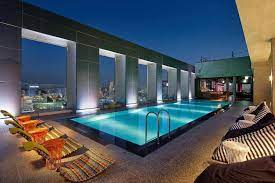

韓國好去處
故宮(韓國首爾鐘路區光化門廣場)
这些古宫的基本构造相似，乍一看没有什么大不同，但是每座宫殿都有其独特的魅力与故事。
來到古今交錯的首爾，怎麼可以錯過最知名最熱門的五大宮呢？以景福宮為首的五大宮是旅客來首爾自由行絕對不能錯過的景點，不論景福宮、昌德宮、昌慶宮、慶熙宮還是德壽宮，每一個宮闕都有自己的特色
弘大飯店(首爾特別市麻浦區楊花路141)
也是四星級酒店，距離地鐵弘大入口站9號出口3分鐘內抵達，由於2020年8月才開幕，整體建築包含房型皆是新穎現代的風格
